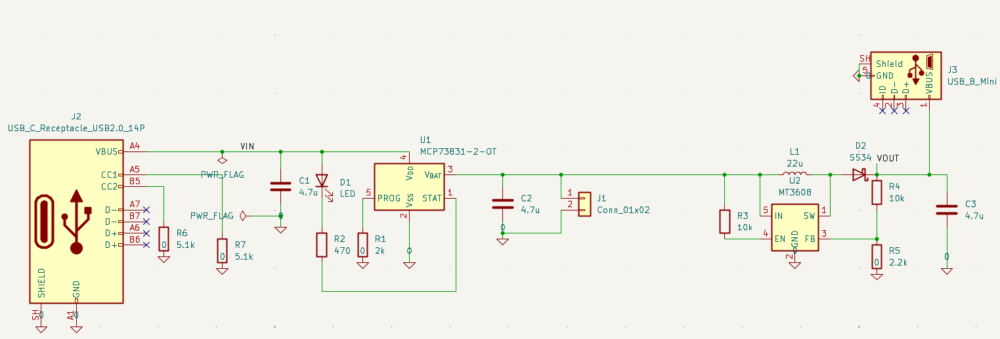
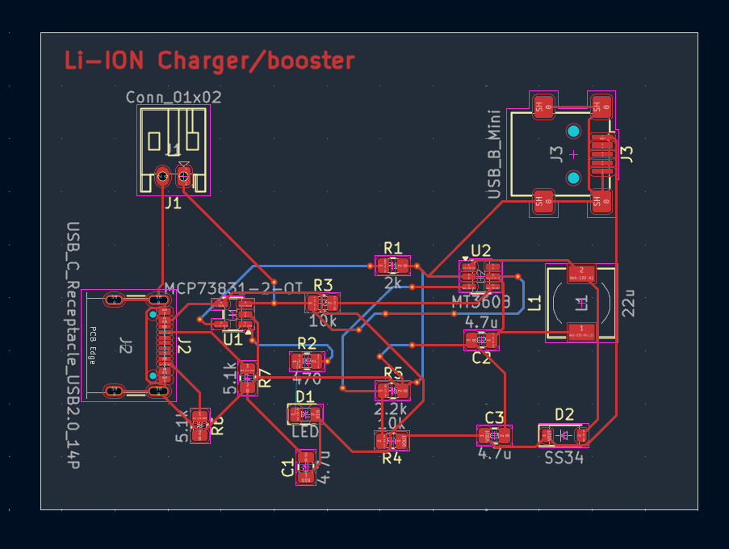

Projects / PROJ-SBC-PWR
USB-C Li-Ion Charger & Boost Converter PCB
1.0Why This Board Exists
This is the first hardware module of a larger build: a mini scanning rover. The rover is not a new idea from scratch, it is my 3D indoor spatial mapper made mobile. That project already works: a VL53L1X time-of-flight sensor on a 28BYJ-48 stepper, rotated through 360° and sampled at fixed angular increments, with an MSP432E401Y driving the motor, reading the sensor over I²C, and streaming results out over UART into a MATLAB point cloud. The scanning head is solved.
What that mapper cannot do is leave the bench. It is tethered, taking data out over a UART cable to a PC and power from whatever is plugged in nearby, and the displacement between scan planes has to be introduced from outside the system. Putting the same scanner on a driving platform is what turns it from a scanner into a rover, and it lets the vehicle's own motion supply the displacement between scan planes instead.
Every one of those changes starts with the same problem: the thing has to carry its own power. That is why this board came first rather than the chassis or the drivetrain. Charge a Li-ion cell from USB-C, then step that cell voltage up to a stable rail that can run the scanning hardware that already exists.
Designing it as a separate board has a second payoff. It is a complete from-scratch PCB exercise in its own right, covering schematic capture, connector selection against real datasheets, power electronics, and layout, without the rest of the rover clouding the scope.
| Function | USB-C Li-ion charger with boost converter output |
|---|---|
| Tool | KiCad (schematic, footprints, layout) |
| Input | USB-C receptacle, 5 V, power only |
| Storage | Single Li-ion cell on a dedicated connector |
| Output | 3.33 V minimum rail on a Mini-USB connector, riding higher with a full cell |
| Stackup | 2 layer (F.Cu / B.Cu) |
| Target | Power module for a mini scanning rover, a mobile version of the 2DX3 spatial mapper |
2.0Signal Chain
The board is four stages in series, and every design decision below traces back to one of them:
- USB-C input. 5 V in from a standard charger, with the port correctly identifying itself as a power sink.
- Li-ion charge IC. Takes VBUS and manages the charge profile into the cell.
- Boost converter. Takes the cell voltage, which sags across the discharge curve, and holds it at or above the 3.33 V the electronics need.
- Output connector. Carries the regulated rail off-board to the rover electronics.

3.0USB-C Input Stage
The input is J2, drawn with the
USB_C_Receptacle_USB2.0_14P symbol, which exposes the USB 2.0 subset of a
USB-C connector rather than all 24 pins. The physical part is a
GCT USB4105 series receptacle, footprint
USB_C_Receptacle_GCT_USB4105-xx-A_16P_TopMnt_Horizontal.
Symbol and footprint therefore do not have matching pin counts, which is normal for USB-C and exactly why this needed checking rather than trusting the library. The symbol describes the electrical subset being used, the footprint describes the pads the physical part actually lands on, and confirming that the pin map lines up between the two meant reading the manufacturer datasheet rather than assuming a sensible default.
The port is wired power only. VBUS and GND go to the charge circuit. The detail that matters is the configuration channel: CC1 and CC2 are each pulled down to GND through 5.1 kΩ. Those two resistors are what tell an attached source that this is a standard USB-C power sink asking for default current. Leave them off and a compliant charger will never turn VBUS on, so a two-resistor omission is enough to make the whole board dead on arrival.
D+, D−, and the remaining unused pins are left unconnected, with explicit
no-connect flags placed in the schematic so ERC treats them as a deliberate decision
instead of an oversight. PWR_FLAG symbols are attached to the input and
ground nets for the same reason: KiCad otherwise reports a power net with no driver,
since the actual source is a cable rather than anything on the sheet. Both are
housekeeping that exists so a clean ERC means something.
Design note
The two 5.1 kΩ resistors are the cheapest components on the board and the most consequential. USB-C sink detection is not optional wiring, it is the handshake that makes the port deliver power at all. They are also placed physically tight to the connector in layout, for the same reason the schematic bothers with them.
4.0Charge and Boost Path
Charge stage
Charging is handled by a MCP73831-2-OT, a single-cell Li-ion charge
controller in SOT-23-5 that sits directly off VBUS. The -2 suffix is the
part variant that regulates to a 4.20 V float voltage, which is the
standard full-charge point for a single Li-ion cell, so the choice of suffix is the
choice of battery chemistry.
Charge current is set by a single resistor. The MCP73831 holds its PROG pin at a fixed reference and mirrors that current internally, giving IREG = 1000 V / RPROG. With R1 at 2 kΩ that works out to 500 mA, which is the part's maximum. One resistor value is the entire charge-rate design, and it is the value to revisit if the cell eventually chosen wants a gentler rate.
The STAT pin drives D1 through a 470 Ω resistor for a charge indicator LED, so the board reports its own state without needing anything attached to read it. C1 and C2 (4.7 µF each) sit on the input and battery nodes, and the cell itself connects through J1, a two-pin header, so the pack can be swapped or removed.
Boost stage
The boost is built around an MT3608, an asynchronous boost converter, meaning it integrates the switch but needs an external rectifier. L1 (22 µH) runs from the battery rail into the switch node, D2 is the Schottky that rectifies it out to VOUT, and C3 (4.7 µF) holds up the output. R3 pulls EN up to the battery rail, so the converter runs whenever a cell is connected rather than needing an enable signal from an MCU that may not have booted yet.
Output voltage is set by the R4 / R5 divider feeding FB. The MT3608 regulates FB to an internal 0.6 V reference, so the divider ratio alone determines the rail:
VOUT = 0.6 V × (1 + R4/R5) = 0.6 V × (1 + 10 k/2.2 k) = 3.33 V
That target is deliberate. The scanning hardware this board exists to feed runs on 3.3 V logic, so the rail is sized to what the load actually wants rather than to a generic 5 V bus, even though the output physically leaves on a USB connector. Two resistors are the only thing standing between the cell and everything downstream, which makes them the highest-consequence values on the board.
Worth being precise about what that number is, because it is a floor rather than a fixed value. A single Li-ion cell falls from roughly 4.2 V at full charge down toward 3.0 V flat, so it starts the discharge above the target. A boost converter has no mechanism to pull its output below its input, so in that region the MT3608 simply stops boosting and the output sits at about the cell voltage less the forward drop across D2, sagging along with the cell. Once the cell reaches 3.33 V the converter takes over and holds the rail there for the remainder of the discharge.
That is acceptable here because of what is downstream. The MCU accepts a range of supply levels rather than a single one, and 3.33 V is the bottom of that range, the minimum needed for a valid logic high. So the design brief for this stage was never "hold exactly 3.33 V", it was "never go below 3.33 V while the cell has charge left". Sizing the divider to the floor and letting the output ride above it early in the discharge satisfies that with one converter instead of the buck-boost the stricter reading would have demanded.
| Ref | Part / value | Function |
|---|---|---|
| J2 | USB-C receptacle, USB 2.0 14-pin symbol on a GCT USB4105 footprint | 5 V charging input |
| R6, R7 | 5.1 kΩ | CC1 / CC2 pull-downs, sink identification |
| U1 | MCP73831-2-OT | Li-ion charge controller, 4.20 V float |
| R1 | 2 kΩ | PROG resistor, sets 500 mA charge current |
| D1, R2 | LED, 470 Ω | Charge status indicator on STAT |
| J1 | 2-pin header | Li-ion cell connection |
| U2 | MT3608 | Asynchronous boost converter |
| L1 | 22 µH | Boost inductor |
| D2 | SS34 Schottky | Boost rectifier |
| R3 | 10 kΩ | EN pull-up, converter always on with a cell fitted |
| R4, R5 | 10 kΩ / 2.2 kΩ | Feedback divider, sets the 3.33 V floor |
| C1, C2, C3 | 4.7 µF | Input, battery, and output decoupling |
| J3 | USB Mini-B receptacle | Regulated output to the MCU board |
5.0Output Connector
The regulated output leaves the board on J3, a USB Mini-B receptacle chosen to match the Mini-USB power input on the target MCU board. Choosing the connector to fit the downstream hardware, rather than dropping in a generic header, keeps the rover build cable-simple later on.
Like the input, it is wired power only: VBUS and GND carry the boost output, while
D+, D−, and ID are no-connected in the schematic. The footprint is
USB_Mini-B_Lumberg_2486_01, or an equivalent Mini-B receptacle from the
same KiCad library.
6.0PCB Layout
Placement was done by function, not by convenience, working along the signal chain:
- USB-C input at the board edge, so the cable plugs in from outside the board rather than over it.
- CC pull-down resistors right at the connector, keeping the configuration lines short.
- Charge IC clustered near the VBUS entry, so the input power path stays short before it does any work.
- Boost converter section kept tight, with the inductor, switch node, and feedback grouped together and separated from the noisier areas of the board.
- Output connector placed last, at the end of the chain.
Routing followed the same priority split. Power nets (VBUS, battery, boost output) are routed wide and direct to hold down resistance and drop at current. The sensitive nets, meaning the CC lines and the boost feedback, are deliberately routed away from the switching node, since feedback is the one trace on this board where picked-up switching noise turns straight into a regulation problem.
That separation is not a rule I copied from a layout guide. On the spatial mapper, driving the stepper motor corrupted I²C transactions with the sensor, and tracking that down cost real debugging time. It is the same failure mode in a different form: a switching load injecting noise into a line that carries small, meaningful signals. Having paid for that lesson once, keeping the boost feedback away from the switch node was the first thing decided about this routing, not the last.
The board is two layer, with vias used to hop from front copper (F.Cu) to back copper (B.Cu) wherever a route could not stay on one side. Working through this surfaced a constraint worth writing down: an SMD pad exists on only one copper layer, so a via cannot simply be dropped onto the pad the way it can on a through-hole pin. The via has to sit just off the pad, with a short trace connecting the two.
The board outline is defined on Edge.Cuts to physically bound the PCB, sized with clearance around the placed components. Mounting holes are still an open question. They cost nothing but board area, they cannot be added after the board is fabricated, and on a vehicle that moves there is a case for bolting the module to the chassis rather than letting it hang off its own cable. The decision gets made before the fabrication files go out.

7.0Simulation Plan
Boost converter behaviour needs validating before the design is committed to fabrication: switching waveforms, inductor current, output ripple, and stability. That work has not started yet, and it is the main thing standing between the current schematic and a fab order.
The first attempt was in KiCad's built-in ngspice simulator, on the reasoning that simulating inside the tool the schematic already lives in avoids redrawing anything. That ran into simulator setup problems that were consuming more time than the simulation itself would have, so the plan moved to LTspice, which means redrawing the circuit but on a toolchain that behaves predictably for switching supplies.
One simplification carries over from that first attempt: the USB-C receptacle gets replaced with a plain 5 V DC source. A connector is a mechanical part with no meaningful SPICE behaviour to solve for, so modelling it adds nothing. What matters electrically at that point in the circuit is that 5 V is present on VBUS, and that is exactly what the source provides. The real connector stays in the KiCad schematic, which is the one that gets fabricated.
The specific questions the simulation has to answer, in order of how much damage getting them wrong would do:
- How clean is the crossover? The cell passes through the 3.33 V target on its way down, and at that point the converter changes behaviour: it goes from passing the cell through to actively boosting. The rail either side of that handover is understood, so what the simulation is really checking is that the transition itself is well behaved rather than oscillatory.
- Does the divider produce the rail the arithmetic predicts? R4 and R5 set the output through a 0.6 V reference, and confirming the real part agrees with the calculation is cheap in simulation and expensive after fabrication.
- Is the 22 µH inductor the right value? Inductor choice sets ripple current and how much output current the stage can actually deliver, so this is where the simulation says whether the part on the schematic can feed the real load.
- What does the switch node and output ripple actually look like? This is the check that the layout decisions in section 6.0 were worth making.
8.0Background Applied
This board builds on earlier embedded and circuits work rather than starting cold, and most directly on one project. The 3D spatial mapper is not just related background here, it is the system this board exists to power. Its VL53L1X sensor, 28BYJ-48 stepper, and MSP432E401Y firmware carry over to the rover essentially intact, so the load this converter has to supply is hardware I have already built and measured rather than a guess. TM4C1294 firmware work covers the wider MCU side. Transistor-level MOSFET and BJT analysis is what makes the boost converter's switch node something to reason about instead of a block to copy. The DC power supply project is the same discipline at a smaller scale: design the power path on paper, simulate it, then measure it.
| Schematic | Capture and footprint assignment in KiCad, ERC clean-up with no-connect flags |
|---|---|
| Components | Connector selection and datasheet cross-referencing (GCT USB4105 series) |
| Standards | USB-C sink-side CC pull-down requirements |
| Layout | Functional placement, power vs. signal routing priority, 2-layer routing with vias, SMD pad layer constraints, Edge.Cuts outline |
| Validation | Planned: LTspice simulation of the switching stage before fabrication |
9.0Status & Next Steps
Where the design stands and what is left:
| Stage | State |
|---|---|
| Schematic capture, input stage | Done |
| USB-C connector selection and CC wiring | Done |
| Charge IC and boost stage capture | Done |
| Component placement and routing | Done |
| Mini-USB output connector and wiring | Done |
| Board outline (Edge.Cuts) | Done |
| Mounting holes | Under review, decide before fabrication |
| LTspice boost validation | Not started |
| Final DRC / ERC | Pending |
| Fabrication and assembly | Pending |
| Bring-up and load testing | Pending |
Bring-up will check the two things the design is actually claiming: that charge behaviour into the cell is correct, and that the boost output holds its voltage under load across the cell's discharge range. After that the module gets integrated with the spatial mapper's MSP432E401Y and VL53L1X scanning head, which is the point of the whole exercise: taking a scanner that works but cannot move, and cutting the cord.
Where this is going
The rover needs power, motion, and sensing. Sensing is already done and documented over on the spatial mapper. This board is power, built first and built to be reusable. That leaves motion as the only genuinely new subsystem left, and it means the rover is less a new project than the third side of one I started in 2DX3.